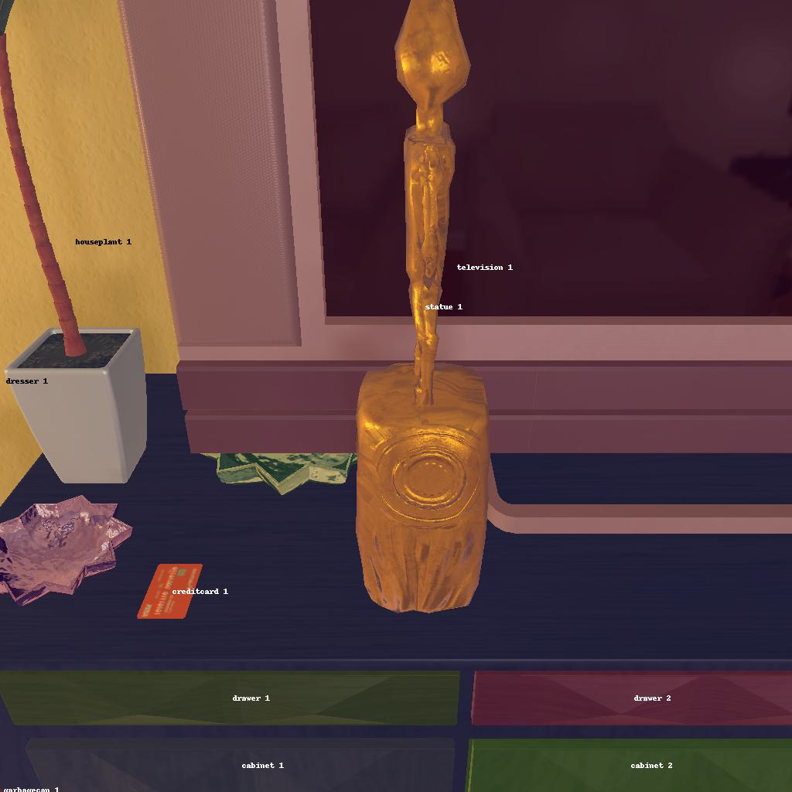

---------------------------------------------------------task: 7---------------------------------------------------------
--------------------------------------------------------------------------------------------------------------------------------------------------------------------
--------------------------------------------------------------------------------------------------------------------------------------------------------------------
Step:--------------------------------------------------------------------------2-------------------------------------------------------------------------------
----------------------------------------
VLM Prompt:
Image1:
Image2:
**Instruction**
1. Analyze the provided image to identify all visible household objects, focusing on those relevant to the task description "put some creditcard on coffeetable."
2. Use the analysis of the image and the task hint "The agent must find an object of the desired type, pick it up, find the correct location to place it, and put it down there." to answer the question: what is the most reasonable action in the choices for the task description "put some creditcard on coffeetable"?
4. Decide and write the answer using the template: The answer is: (i): , where i is the real number. If there is no desired object in the image, search every place based on **Initial Observation** to find the object. And if no one is exactly correct, choose a similar answer.
**Initial Observation**
You are in the middle of a room. Looking quickly around you, you can see armchair (1-2), dresser (1), garbagecan (1), cabinet (1-4), drawer (1-4), coffeetable (1), sidetable (1), sofa (1)
**Answer Choices**
(1): go to armchair 1
(2): go to armchair 2
(3): go to garbagecan 1
(4): go to cabinet 1
(5): go to drawer 2
(6): go to cabinet 2
(7): go to drawer 3
(8): go to cabinet 3
(9): go to drawer 4
(10): go to cabinet 4
(11): go to coffeetable 1
(12): go to sidetable 1
(13): go to sofa 1
(14): take television 1 from dresser 1
(15): take statue 1 from dresser 1
(16): examine dresser 1
**Answer**
Let's think step by step by following the instructions.
----------------------------------------
----------------------------------------
Original Response:
First, we need to identify all visible household objects relevant to the task "put some creditcard on coffeetable." In Image 1, we can see a creditcard on the floor near dresser 1 and statue 1. The task requires finding an object of the desired type, which in this case is the creditcard.
Next, we need to find the correct location to place it, which is the coffeetable. Although the coffeetable is not visible in the provided images, it is mentioned in the Initial Observation.
Given this information, the most reasonable action to accomplish the task is to first pick up the creditcard. The action that corresponds to this is not explicitly listed in the answer choices, but the closest action is "examine dresser 1" which might lead to picking up the creditcard.
Therefore, the answer is: (16): examine dresser 1.
----------------------------------------
----------------------------------------
>>> Refine Original VLM Response and Get Pure Action: No action
----------------------------------------
-----------------------------------------------------------------
Running time: 7.706623792648315 seconds
Total Money: 2.9841699999999993
-----------------------------------------------------------------
-----------------------------------------------------------------
Text Observation:Nothing happens.
-----------------------------------------------------------------
UNSUCCEED